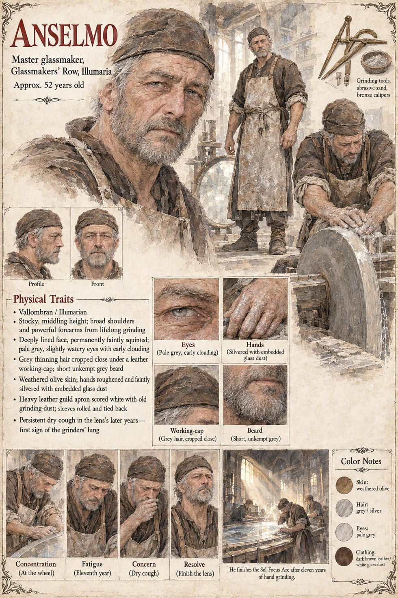

Anselmo
Master glassmaker of the Glassmakers' Row, Illumaria · approx. 52 years old
Master of the Glassmakers' Row and of the guild commissioned by the Order to make the Sol-Focus Arc, a lens the diameter of a cartwheel, to catch and concentrate the single shaft of true sun that falls through the oculus of the Grand Basilica. He and his guild grind it by hand across eleven years, and die within a decade of finishing it, one after another, of the grinders' lung, with none of them having written down how.
It is a very fine instrument. It is also, as Marcello notes on the night it is unwrapped, an instrument that gathers a light it had not made, where the Standing Noon had parted a dark it had not touched. His sheet gives Anselmo hands silvered with embedded glass dust and a dry cough in the lens's later years.